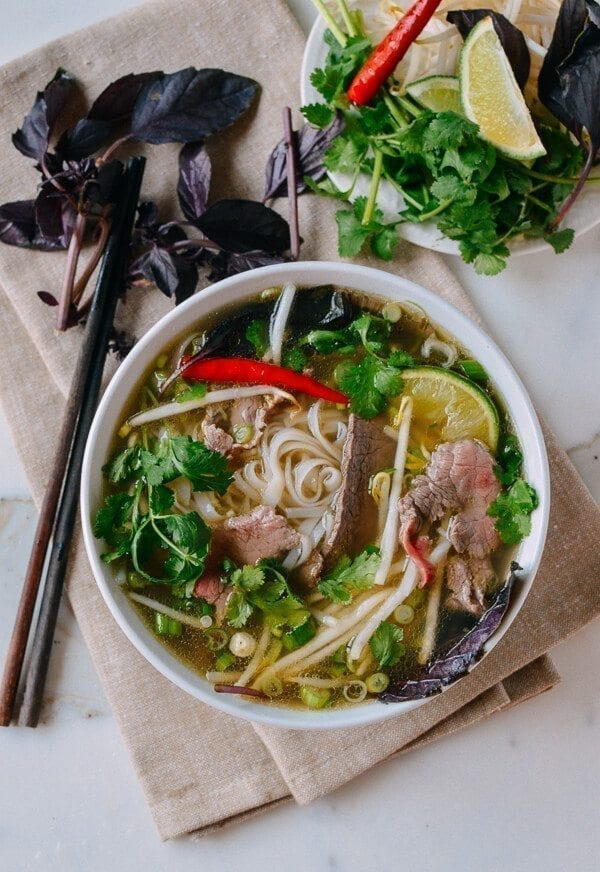
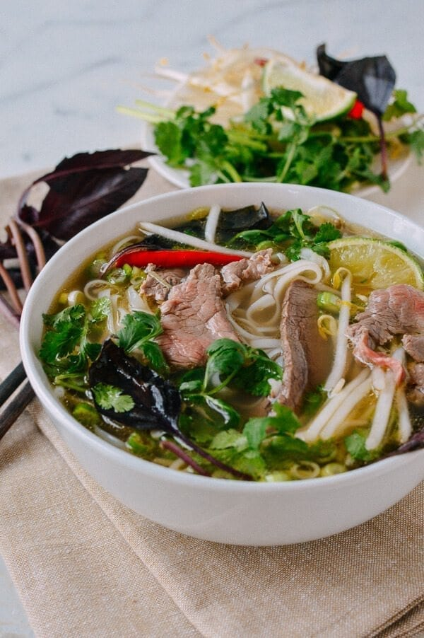
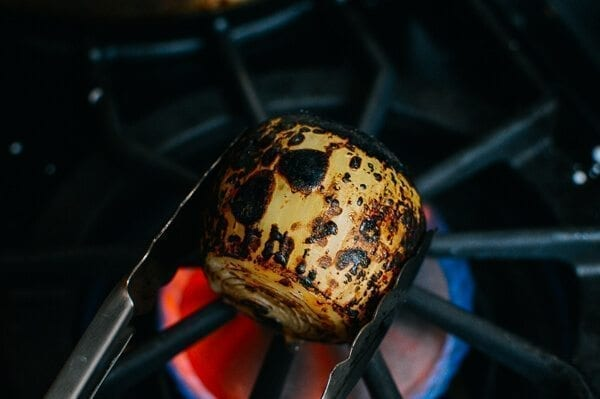
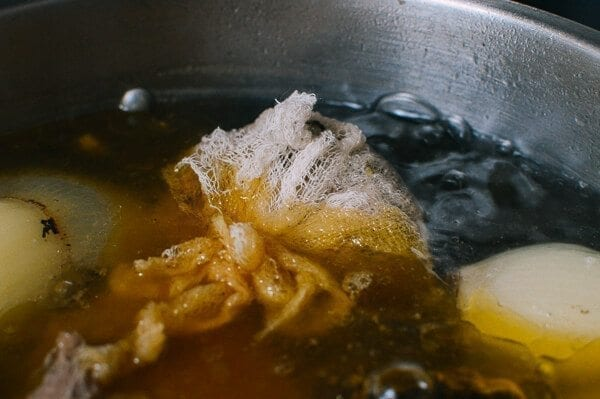
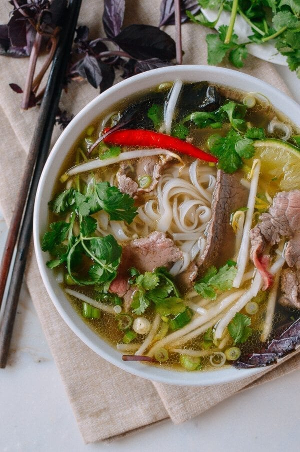
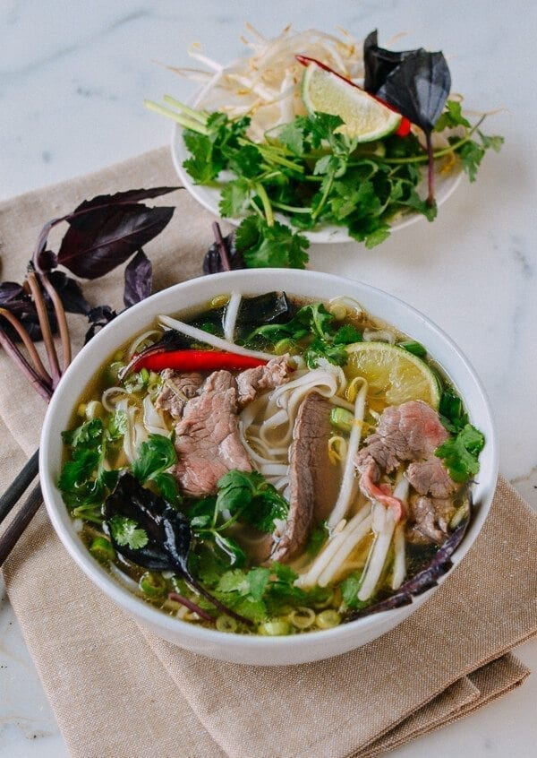
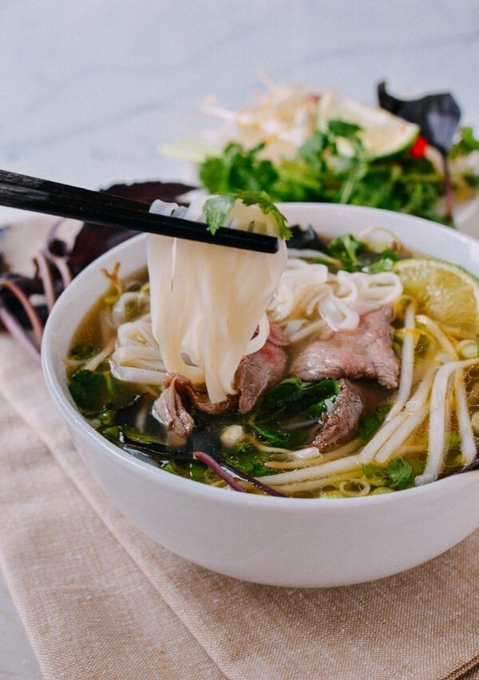
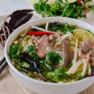

POSTED:7/29/2019
UPDATED:1/03/2022
Pho has long been one of my absolute favorite things to eat. There has been more than one occasion in which I have actually gotten in my car and driven over 45 minutes for the express purpose of indulging in good bowl of the stuff, which is why this pho recipe is sorely needed.
Note: This recipe was originally published in March 2015, with updates added as of July 2019. The recipe has been tested by us and many readers and approved by Vietnamese friends, so it remains the same!
Pho (I found out in college that it’s actually pronounced “fuh.” For someone who’d been shamelessly calling it “foe” for eighteen years, this was an embarrassing revelation) is a Vietnamese noodle soup that’s often made with beef and topped with awesome things like fresh bean sprouts, basil, and chilies.
There’s just something about it—the fragrant broth, the slightly chewy rice noodles, and all the aromatic toppings (the squeeze of lime at the end is the BEST)—that seriously justifies a 90-minute roundtrip drive.
A bowl of pho is only as good as the broth. There’s no trick to the noodles, really, and the beef is often added to the soup raw. The other vegetable and herb toppings are ALL added to the soup raw.
In short? No broth, no bacon.
I never really thought it would be realistic to make it myself at home––chalk it up to a cynical but somewhat substantiated opinion that no broth I could make at home would ever taste as good as the (sometimes MSG-laden) restaurant equivalent.
I decided to take a stab at it anyway, and the results were awesome.I also talked with a Vietnamese friend/mom who cooks this dish on a regular basis for her family and got all the tips! Her kids are grown and in college, but she says they always come home for her pho!
There is a bit of prep involved to get the broth going, but after that, it’s just a long, slow simmer until you’re ready to assemble the dish.
Here are the 4 steps and secrets to making a proper pho broth:
I know, it’s a lot of fish sauce! However, she said that this method tastes the best, but most people don’t do it because fish sauce is so expensive.
She also mentioned, rather proudly, that the Vietnamese brands of fish sauce are much more flavorful (and expensive at $9-$12 a bottle) than the Thai brands most people buy. Which is just food for thought.
In accordance with this insider information, feel free to add more fish sauce to the broth and decrease the amount of salt. As is our mantra here at The Woks of Life, it’s all up to your own taste preferences! Oh, and definitely buy a high quality fish sauce for this pho recipe. It will only make your broth better!
Place the bones and beef chuck in large stockpot and add water to cover. Bring to a boil and boil for 5 minutes. Drain in a colander and thoroughly clean the stockpot. This process removes any impurities/scum and will give you a much cleaner broth.
Meanwhile, char your ginger and onions. Use tongs to hold the ginger and onions (one at a time) over an open flame, or place each directly on a gas burner. (You can also do this on a grill.)
Turn until they’re lightly blackened and fragrant, about 5 minutes. Rinse away all the blackened skins.
Add 5 quarts fresh water back to the stockpot and bring to a boil. Transfer the bones and meat back to the pot, along with the charred/cleaned ginger and onions. Add the scallions, fish sauce and rock sugar. Reduce the heat to low, and simmer until the beef chuck is tender, about 40 minutes. Skim the surface often to remove any foam and fat.
Remove one piece of the chuck and transfer to a bowl of ice water to stop the cooking process. Then transfer this piece of beef to a container and refrigerate (you will slice this to serve with your pho later. If you were to leave it in the pot, it would be too dry to eat). Leave the other piece of chuck in the pot to flavor the broth.
Now toast the spices (star anise, cloves, cinnamon stick, cardamom pod (if using), fennel seeds, and coriander seeds) in a dry pan over medium low heat for about 3 minutes, until fragrant. Use kitchen string to tie up the spices in a piece of cheesecloth, and add it to the broth.
Cover the pot and continue simmering for another 4 hours. Add the salt and continue to simmer, skimming as necessary, until you’re ready to assemble the rest of the dish. Taste the broth and adjust seasoning by adding more salt, sugar, and/or fish sauce as needed.
To serve, boil the noodles according to package instructions. Add to a bowl. Place a few slices of the beef chuck and the raw sirloin on the noodles. Bring the broth to a rolling boil and ladle it into each bowl. The hot broth will cook the beef. Garnish with your toppings, and be sure to squeeze a lot of fresh lime juice over the top!
Scroll down for the full list of ingredients and the recipe card.
Short on time? Check out our Instant Pot Pho recipe as well!
Mmmm. Pho noodle pull!
Looking for more authentic recipes? Subscribe to our email list and be sure to follow us on Pinterest, Facebook, Instagram, Youtube!
Pho is a Vietnamese noodle soup topped with awesome things like fresh bean sprouts, basil, and chilies. This pho recipe was approved by a Vietnamese friend!
YOU’LL NEED:
GARNISHES:
Calories: 495kcal (25%) Carbohydrates: 68g (23%) Protein: 30g (60%) Fat: 11g (17%) Saturated Fat: 5g (25%) Cholesterol: 69mg (23%) Potassium: 1106mg (32%) Fiber: 3g (12%) Sugar: 14g (16%) Vitamin A: 270IU (5%) Vitamin C: 14.9mg (18%) Calcium: 95mg (10%) Iron: 4.4mg (24%)